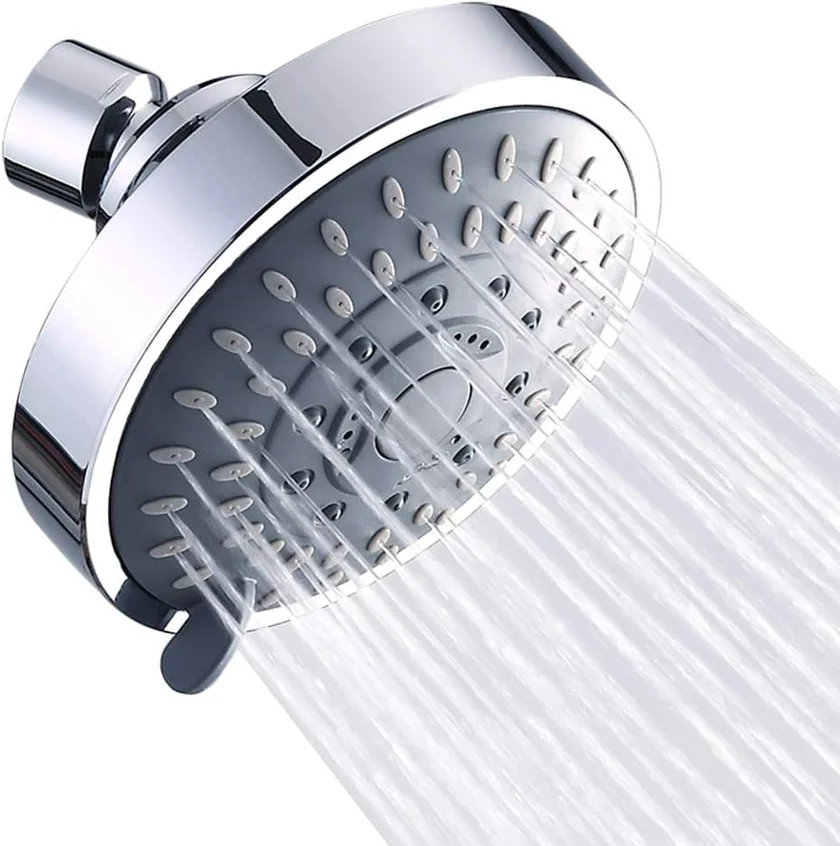
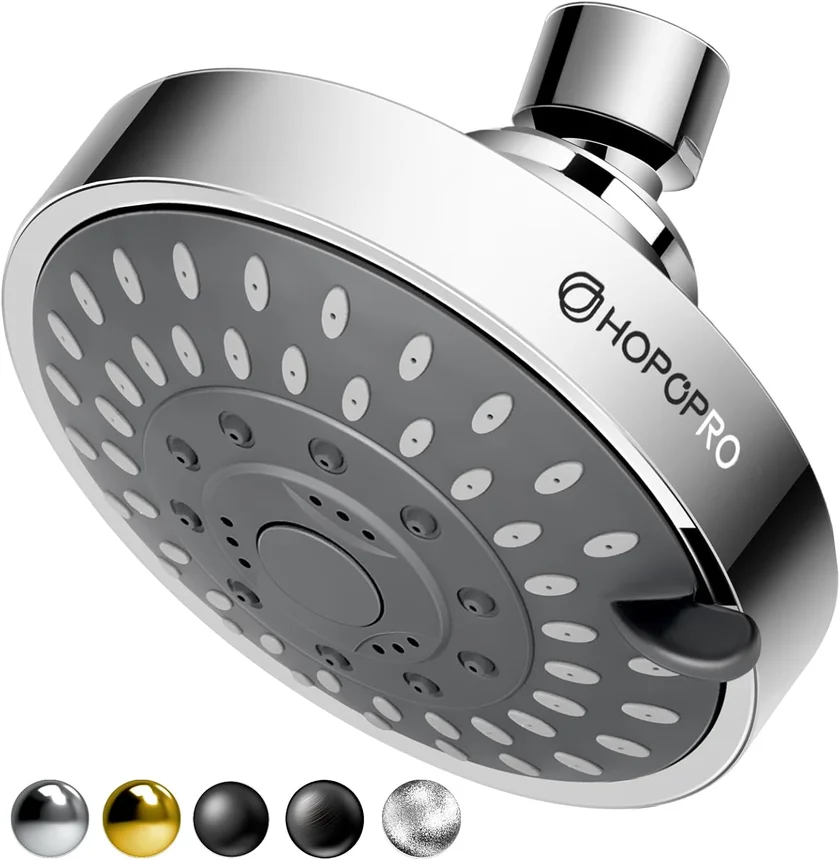
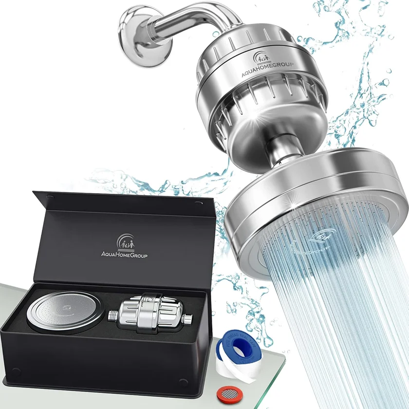
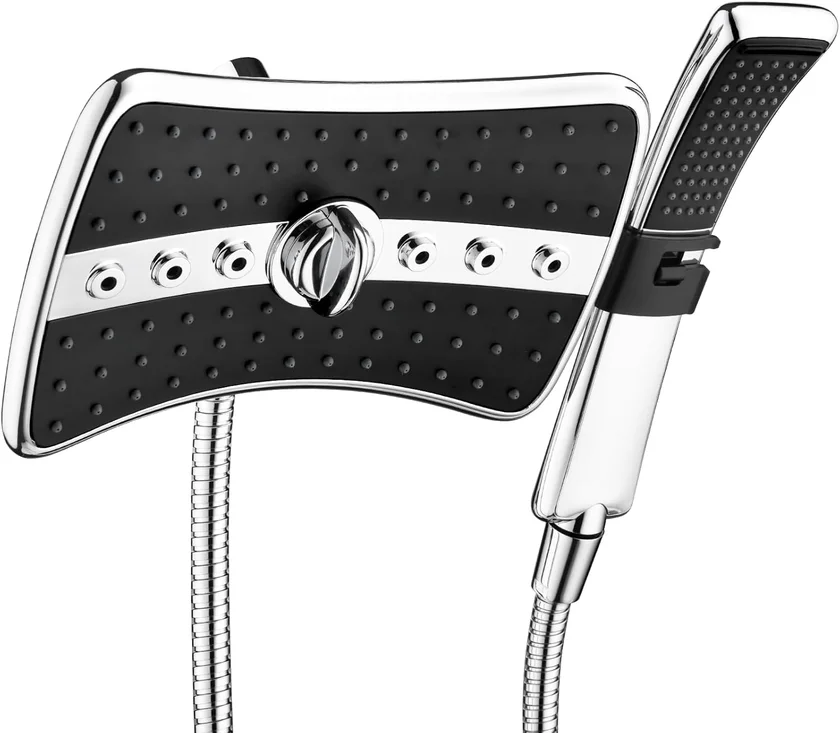
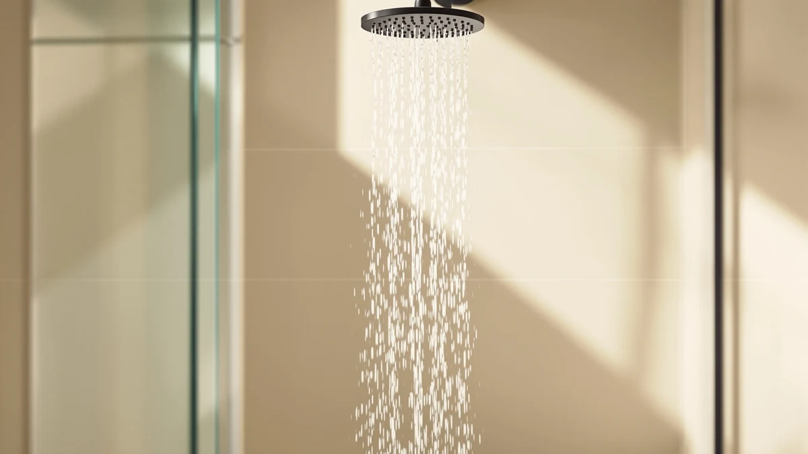
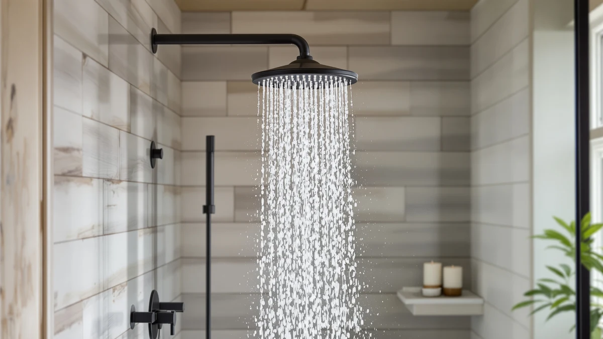
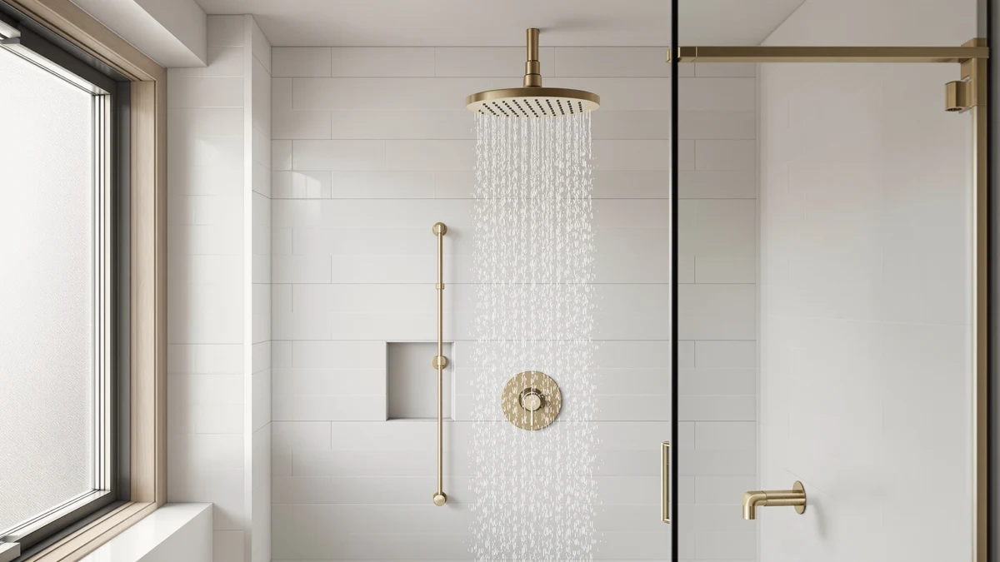

A shower head cannot add water pressure, only make the most of it.
US federal rules cap a shower head at 2.5 gallons per minute, so a firm shower and a limp one differ in how the nozzles use the flow your plumbing delivers. A wide rain head that feels lavish at strong pressure can turn to drizzle in a low-pressure home, and the number of spray modes matters far less than nozzle design. We compare heads on flow rate, spray design, build and fit, using spec sheets, current Amazon prices and what verified owners report.
Our 5 picks, side by side
From our full comparison of shower heads. Each one wins a specific job.
| Pick | Product | Price | Buy |
|---|---|---|---|
| Best Overall | SparkPod Rain Shower Head 6"Anyone wanting a reliable upgrade from their builder-grade shower head | $35.14 | Check price |
| Best Value |  Aisoso 5-Setting Rain Shower HeadBudget shoppers who want multiple spray modes | $13.99 | Check price |
| Best Budget |  HOPOPRO 5-Mode High Pressure Shower Head 4" ChromeRenters wanting a quick, affordable upgrade | $15.99 | Check price |
| Best Filtered |  AquaHomeGroup Luxury Filtered Shower Head Set 20+3 Stage for Hard WaterAnyone with hard water or concerned about chlorine exposure | $49.95 | Check price |
| Best Combo |  BRIGHT SHOWERS Dual ComboFamilies needing both fixed and handheld flexibility | $46.98 | Check price |
Just published
New reviews and guides go up every day.

Delta Faucet 5-Spray Touch-Clean In2ition Review

Kohler 22169-AF Forte Multifunction Showerhead Review

Delta 4-Setting In2ition 2-in-1 Dual Shower Head Review
Kohler 76465-G-CP Awaken Rain Shower Head Review
Find the right shower head for your bathroom
Guides and reviews from across the site, grouped by the question they answer.
Water pressure and flow rate
- Best Shower Heads for PowerComparison
- Low Flow Shower Heads vs Standard: Which Is Better?Comparison
- Best Shower Head to Increase Water PressureComparison
- Best Shower Heads with Good PressureComparison
- Best Shower Heads for High Water PressureComparison
- The Best Low-flow Rainfall Shower HeadsComparison
+ 27 more in all articles
Filters and hard water
- Best Shower Head Water SoftenerComparison
- Best Shower Head Filter for Hard WaterComparison
- Best Shower Head Filter to Soften WaterComparison
- Best Shower Filter for HairComparison
- Best Filtered Shower Heads Under 100Comparison
- The Best Rainfall Shower Heads For hard waterComparison
+ 25 more in all articles
Fixed, handheld and combo heads
- Best Shower Heads with HandleComparison
- Best Shower Heads with SprayerComparison
- The Best Led Handheld Shower HeadsComparison
- The Best Fixed Shower HeadsComparison
- The Best Rainfall Handheld Shower HeadsComparison
- Best Shower Heads with Handheld Spray ComboComparison
+ 51 more in all articles
Rain heads and shower systems
- The Best Massage Rainfall Shower HeadsComparison
- The Best Rainfall Shower Heads Under $100Comparison
- The Best Led Shower HeadsComparison
- The Best Bluetooth Shower HeadsComparison
- The Best Rainfall Shower Heads Under $50Comparison
- The Best Bluetooth Rainfall Shower HeadsComparison
+ 46 more in all articles
Fit, install and care
- Shower Head HeightComparison
- Plastic Shower Heads vs Metal: Which Is Better?Comparison
- Best Shower Heads for Tall PeopleComparison
- Best Matte Black Shower Heads: Sleek Finish Picks ReviewedComparison
- Shower Head Finishes GuideGuide
- Best How to Install Shower HeadGuide
+ 5 more in all articles
Budget, brands and buying advice
- Delta Shower Heads vs Moen: Which Is Better?Comparison
- Delta Shower Heads vs Kohler: Which Is Better?Comparison
- Best Shower Heads in the MarketComparison
- The Best Shower Heads Under $100Comparison
- Best Shower Head Under 200: 7 Top PicksComparison
- The Best Shower Head Buying GuideGuide
+ 7 more in all articles
How we research
What we compare
- Flow rate: 2.5 gallons per minute is the US federal maximum; WaterSense-labeled heads use 2.0 or less, and some states, California among them, set lower limits.
- Spray design: nozzle size and pattern decide how firm the water feels at your pressure; the number of modes matters far less.
- Type and build: fixed, handheld, rain or combo, with a plastic or all-metal body and a finish that matches your other fixtures.
- Price: Amazon's current price, checked every night.
- What verified owners report after months of daily use.
What we don't do
We don't run a lab, and we don't claim to have installed or handled these products ourselves. Our picks come from published specifications, current Amazon prices and what verified owners report again and again.
Every Amazon link on this site is an affiliate link. It never decides the ranking.
Common questions
Will a new shower head increase my water pressure?
No shower head can add pressure your plumbing does not supply. A head with smaller, focused nozzles can make the same flow feel firmer, and a sudden drop in spray is often mineral scale clogging the old head. Our guide to shower heads for low water pressure covers the weak-pressure case.
What flow rate should I choose?
US federal rules cap shower heads at 2.5 gallons per minute, and many models run at 1.8 or 2.0, often with an EPA WaterSense label. With strong pressure, a lower-flow head saves water without feeling thin; with weak pressure, stay closer to 2.5. Some states set lower limits, so check yours first; our flow rate guide explains the numbers.
Do I need a plumber to install a shower head?
Usually not. Most US shower heads thread onto a standard 1/2-inch shower arm: unscrew the old head, wrap the arm threads with plumber's tape and tighten the new one by hand. Full shower systems that replace the valve in the wall are a different job and often call for a plumber. Our installation guide walks through the steps.